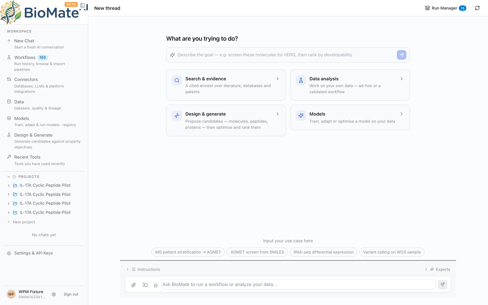

Describe your goal in plain English. BioMate takes it from there.
No software to install and no code to write. Type a goal, see which kind of work it is, review the message, send it yourself, and read the result. Nothing runs until you confirm.
A cloud workbench you talk to in plain language.
Instead of installing software and assembling tools yourself, you describe what you want. BioMate either answers from the scientific literature and databases, or runs a tested analysis in the cloud — and hands back the results with a record of how they were produced.
Describe a goal
In everyday words — no coding or bioinformatics background needed.
Answers or runs
Reads the literature for a cited answer, or runs a validated workflow in the cloud.
Shows you first
It shows what it is about to do before anything runs or incurs cost.
Finding evidence · analysing your own data · designing molecules · learning from lab results — four kinds of work, one shared doorway.
Every new conversation opens on the cold start.
A single intent bar where you type your goal, four module cards in the middle, and the composer — the message box — at the foot. Think of it as a reception desk: you say what you need, and it points you in the right direction.

Four kinds of work — and you never have to pick one.
The cards simply help you recognise which kind of work your goal belongs to. Type your goal in the intent bar and BioMate routes it to the right one.
"What is known?"
A short, cited answer drawn from literature and databases. The example in this tutorial.
"Run this on my data"
RNA-seq, variant calling, and more, using a validated pipeline. (Tutorial 3)
"Propose candidates"
New candidate molecules for a drug program. (Tutorial 1)
"Learn & improve"
Learn from your lab results to improve the next round. (Tutorial 2)
You do not pick a module first — the intent bar routes your plain-English goal to the right kind of work.
Time and cost are shown before you send.
BioMate sorts every request into one of two lanes and tells you which one up front, so you know the time and cost before you commit.
A cited answer in seconds
Reads the literature and databases and replies in the chat. No large computation is involved. "What is known about X" is Instant.
A validated workflow
Runs in the cloud over minutes to hours and uses paid compute. Running an analysis on your own data is Cloud.
A Cloud request never starts paid computation until you confirm.
You stay in control: nothing is sent until you press Send.
A card or the intent bar pre-fills the composer at the foot of the chat. You read what was filled in, adjust it, attach any data, and press Send yourself. Only then does anything happen.

Type a real goal and see the lane before you send.
We'll ask an evidence question, because it returns in seconds: "What is the evidence linking JAK1 to rheumatoid arthritis, and how strong is it?" As you type, BioMate shows a short restatement — the lane it recognised (here the Instant lane, shown as "Answer here · with sources") and a plain reading of the subject ("a question about what is known").

A concise, sourced report you can trace.
An evidence answer carries numbered markers tying each claim to a source, citations that open to the publisher, and a boundary block that states what the answer is not evidence for.
How to read it
Numbered markers [1] [2] point to the sources the answer used. Each citation opens to the publisher. The boundary block tells you how far the answer can be relied on.
An evidence answer summarises the published literature; it is not a verdict on your own data. For your own data, the Cloud lane runs a validated analysis and returns results with a record of how they were produced.
Type a goal → check the lane → review → send → read the result.
That is the whole doorway. Everything else in BioMate is a richer version of this one loop, with its sources or its reproducibility record attached.
- 1Type a goal in plain words
- 2Check the lane — Instant or Cloud
- 3–4Review the seeded message, then send it yourself
- 5Read the result — sources, or a record
| Ask what's known | Search & evidence · Instant · this tutorial |
| Design molecules | Design & generate · Tutorial 1 |
| Learn from lab results | Models · Tutorial 2 |
| Run a full analysis | Data analysis · Cloud · Tutorial 3 |
BioMate shows you what it is about to do before anything runs.